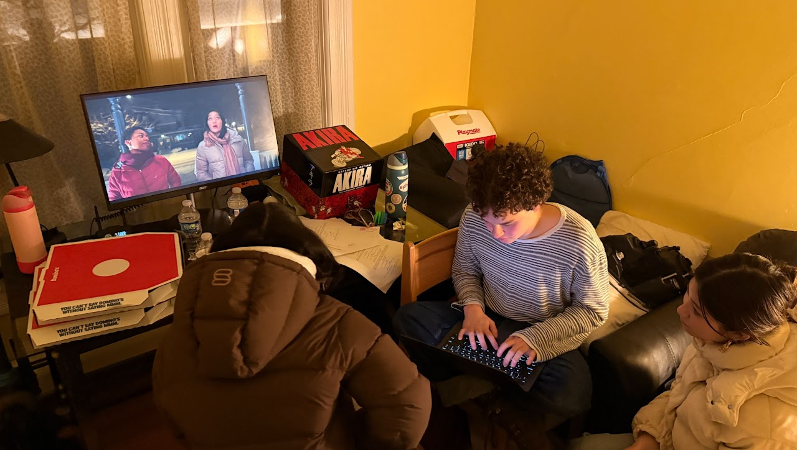

Documentaries:
"Voices of Tallevast: Eulogy, Elegy, or A Small Town Fighting for Justice" (2026)
(→ click to watch ←)
What are the prices to pay in search of belated environmental justice? The 25-year struggle of Tallevast, Florida showed how a resilient, close-knit community undergoes schism, paranoia, and displacement after the so-called belated arrival of environmental justice. New laws were past to hold government and corporations accountable in the future; the land cheapened; and industrial zoning cornered in. Where lies the future of Tallevast?
"The Last Hunt" (2022)
(→ click to watch ←)
In the isolated mountain ranges bordering China and Myanmar, to be Wa was once to be hunter, forest guardian, and knife-wielder. Ai Cong, Head and Priest of the Wa clan, watches these traditions fade with each passing generation. His hope rests on his twelve-year-old son, Ai Hu.
"Tree of Bee Spirit" (2023)
(→ click to watch ←)
Narrated through the perspective of Guowen Su, the last hereditary prince of the Blang People, this film traces a century of transformation within the Blang Community on the borderlands of Yunnan, Myanmar, and Laos. Amid rapid assimilation into mainstream culture, what endures was their devotion to their traditional livelihood, the Pu'er tea of Mt. Jingmai, and their religious practice, a mix of Animism and Buddism. A documentary in service of memory, and of the elders who still hold it.
"Rite of Passage" (2022)
(→ click to watch ←)
Two elders, two peoples, four decades of upheaval. SUI Ga of the Wa and SU Guowen of the Blang reflect on lives shaped by the founding of the People's Republic and scarred by the Cultural Revolution ('60s and '70s), while also reflecting on their personal gains and losses as they were embroiled in political and economic upheavals. An oral-history of endurance, told in their own words.
Narrative Films:
"Flightless Birds" (2025)
(→ click to watch ←)
When three childhood friends, Emu, Kiwi, and Magpie, reunite in the forest to visit their imaginary fantasy world one last time, they realize that one of them, Emu, cannot see it and has never been able to, which leads old tensions to bubble to the surface.
"Dear Mother" (2025)
(→ click to watch ←)
Eloise's father left to find a mythical fish and never came back. Her mother now wears sunglasses indoors and bakes scones without end. With only her plant Rory for company, Eloise sets out to find him. A film about grief, absence, and the strange ways we cope. Co-directed with Zoe Hoffmann Kamrat, from her original screenplay.
"Master and Margarita" (2025)
(→ click to watch ←)
A trailer created for an experimental theatrical adaptation - joint production with Cap and Bells. Produced by Diliara Sadykova and Jane Su. Cinematography by Darren Guo and Doug Wang.

"The Double Date" (2027)
[On-going Production]
(→ click to watch ←)
Guy wants to go on double date with his highschool crush but has no friends. Buys a mannequin to go with him. Goes poorly.